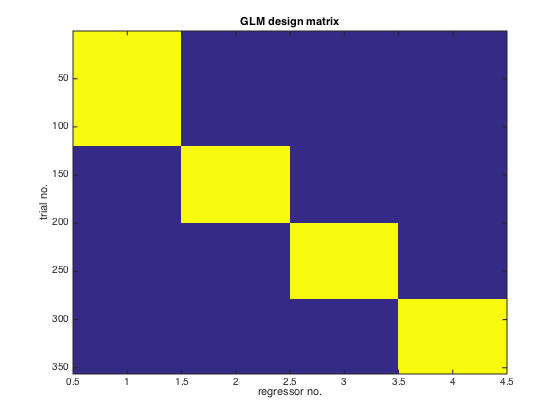
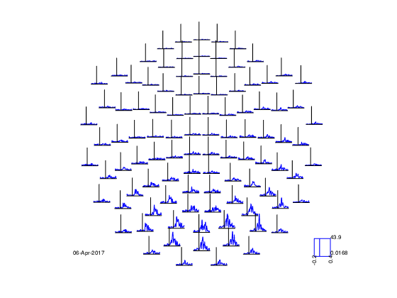

Sensorspace ERF Analysis with OAT
In this practical we will work with a single subject's data from an emotional faces task (data courtesy of Susie Murphy) and perform an ERF analysis in sensor space.
You will need the following files from the example_data directory:
- Asss_fif_spm12_meg25.mat - an SPM MEEG object that has continuous data that has already been SSS Maxfiltered and downsampled to 250 Hz.
- eAsss_fif_spm12_meg25.mat - an SPM MEEG object that has the same data epoched into the different task conditions.
Contents
SETUP THE MATLAB PATHS
make sure that fieldtrip and spm are not in your matlab path
setenv('OSLDIR','/Users/andrew/Software/Matlab/osl2.1/') addpath(genpath(getenv('OSLDIR'))); osl_startup(osldir);
INITIALISE GLOBAL SETTINGS FOR THIS ANALYSIS
This cell sets the directory that OAT will work in. Change the workingdir variable to correspond to the correct directory on your computer before running the cell.
% directory where the data is: workingdir='/Users/andrew/Projects/OSL2_testdir/meg_workshop/drugface/data/'; % directory where the data is cmd = ['mkdir ' workingdir]; if ~exist(workingdir, 'dir'), unix(cmd); end % make dir to put the results in clear spm_files_continuous spm_files_epoched;
SET UP THE SUBJECTS FOR THE ANALYSIS
Specify a list of the fif files, structural files (not applicable for this practical) and SPM files (which will be created). It is important to make sure that the order of these lists is consistent across sessions. Note that here we only have 1 subject, but more generally there would be more than one. For example:
fif_files{1}=[testdir '/fifs/sub1_face_sss.fif']; fif_files{2}=[testdir '/fifs/sub2_face_sss.fif']; etc... spm_files{1} = [workingdir '/sub1_face_sss.mat']; spm_files{2} = [workingdir '/sub2_face_sss.mat']; etc...
spm_files_continuous{1}=[workingdir '/Asss_fif_spm12_meg25.mat'];
spm_files_epoched{1}=[workingdir '/eAsss_fif_spm12_meg25.mat'];
SETUP SENSOR SPACE SOURCE RECON
This stage sets up the source reconstruction stage of an OAT analysis. The source_recon stage is always run even for a sensorspace analysis, though in these cases it simply prepares the data for subsequent analysis. In this example we define our input files (D_continuous and D_epoched) and conditions before setting a time frequency window from -200ms before stimulus onset to +400ms and 4 to 100Hz. The source recon method is set to 'none' as we are performing a sensorspace analysis The oat.source_recon.dirname is where all the analysis will be stored. This includes all the intermediate steps, diagnostic plots and final results. Make sure this directory does not contain any other analyses that might be overwritten.
oat=[]; oat.source_recon.D_epoched=spm_files_epoched; % this is passed in so that the bad trials and bad channels can be read out oat.source_recon.D_continuous=spm_files_continuous; oat.source_recon.conditions={'Motorbike','Neutral face','Happy face','Fearful face'}; oat.source_recon.freq_range=[4 100]; % frequency range in Hz oat.source_recon.time_range=[-0.2 0.4]; oat.source_recon.method='none'; oat.source_recon.normalise_method='none'; % Set this to something specific oat.source_recon.dirname = 'sensorspace_erf';
SETUP THE FIRST LEVEL GLM
This cell defines the GLM parameters for the first level analysis. Critically this includes the design matrix (in Xsummary) and contrast matrix Xsummary is a parsimonious description of the design matrix. It contains values Xsummary{reg,cond}, where reg is a regressor index number and cond is a condition index number. This will be used (by expanding the conditions over trials) to croat_settingse the (num_regressors x num_trials) design matrix: Each contrast is a vector containing a weight per condition defining how the condition parameter estimates are to be compared. Each vector will produce a different t-map across the sensors. Contrasts 1 and 2 describe positive correlations between each sensors activity and the presence of a motorbike or face stimulus respectively. Contrast 3 tests whether each sensors activity is larger for faces than motorbikes.
Xsummary={};
Xsummary{1}=[1 0 0 0];Xsummary{2}=[0 1 0 0];Xsummary{3}=[0 0 1 0];Xsummary{4}=[0 0 0 1];
oat.first_level.design_matrix_summary=Xsummary;
% contrasts to be calculated:
oat.first_level.contrast={};
oat.first_level.contrast{1}=[3 0 0 0]'; % motorbikes
oat.first_level.contrast{2}=[0 1 1 1]'; % faces
oat.first_level.contrast{3}=[-3 1 1 1]'; % faces-motorbikes
oat.first_level.contrast_name{1}='motorbikes';
oat.first_level.contrast_name{2}='faces';
oat.first_level.contrast_name{3}='faces-motorbikes';
oat.first_level.cope_type='cope';
oat.first_level.report.first_level_cons_to_do=[2 1 3];
oat.first_level.bc=[0 0 0];
oat = osl_check_oat(oat);
Detected Elekta Neuromag 306 data. Using default Elekta Neuromag 306 settings. Warning: oat.source_recon.modalities not set, or not set properly. Will set to default:MEGPLANARMEGMAG Using oat.source_recon.freq_range for oat.first_level.tf_freq_range oat.source_recon.D_epoched set. OAT will do an epoched data trial-wise GLM
VIEW OAT SETTINGS
As well as using the settings we specified in the previous cell, calling osl_check_oat has filled in a bunch of other settings as well.
oat oat.source_recon oat.first_level
oat =
to_do: [1 1 1 1]
do_plots: 0
source_recon: [1x1 struct]
first_level: [1x1 struct]
subject_level: [1x1 struct]
group_level: [1x1 struct]
osl2_version: '3f3ee90'
ans =
time_range: [-0.2000 0.4000]
conditions: {1x4 cell}
D_continuous: {'/Users/andrew/Projects/OSL2_testdir/meg_wor...'}
D_epoched: {'/Users/andrew/Projects/OSL2_testdir/meg_wor...'}
freq_range: [4 100]
dirname: 'sensorspace_erf'
sessions_to_do: 1
epochinfo: []
method: 'none'
bandstop_filter_mains: 0
artefact_chanlabel: []
modalities: {'MEGPLANAR' 'MEGMAG'}
session_names: {'session1'}
normalise_method: 'none'
regpc: 0
gridstep: 7
forward_meg: 'Single Shell'
mri: []
pca_dim: 50
force_pca_dim: 0
type: 'Scalar'
hmm_num_states: 0
hmm_num_starts: 1
hmm_pca_dim: 40
hmm_av_class_occupancy: 35
report: [1x1 struct]
ans =
doGLM: 1
design_matrix_summary: {1x4 cell}
contrast: {1x3 cell}
contrast_name: {1x3 cell}
sessions_to_do: 1
time_range: [-0.2000 0.4000]
baseline_timespan: [-0.2000 0]
do_weights_normalisation: 1
use_robust_glm: 0
bc: [0 0 0]
sensor_space_combine_planars: 'combine_cartesian'
bc_trialwise: 0
name: 'first_level'
time_moving_av_win_size: []
post_glm_time_moving_av_win_size: []
hmm_do_glm_statewise: 0
tf_method: 'none'
tf_freq_range: [4 100]
tf_num_freqs: 1
time_average: 0
tf_multitaper_ncycles: []
post_movingaverage_downsample_factor: []
post_tf_downsample_factor: []
tf_morlet_factor: 6
tf_hilbert_freq_res: 2
tf_hilbert_do_bandpass_for_single_freq: 0
tf_hilbert_freq_ranges: []
tf_hanning_ncycles: []
cope_type: 'cope'
save_trialwise_data: 0
trialwise_directory: []
parcellation: [1x1 struct]
is_epoched: 1
do_glm_demean: 0
report: [1x1 struct]
warp_fields: []
CHECK OVER OAT SETTINGS
The osl_check_oat.m function should be used to setup the settings for these three stages of the pipeline. On the Matlab command line type
help osl_check_oat
to see what the mandatory fields are. Note that you MUST specify:
- oat.source_recon.time_range
- oat.source_recon.conditions
- oat.source_recon.D_continuous
- oat.source_recon.D_epoched
Descriptions of what these correspond to are also displayed when you type >> help osl_check_oat
We are only interested in the first two stages of an OAT analysis, as we are not doing any group analysis here:
- oat.source_recon
- oat.first_level
Each of these contains the settings for the relevant stages of the pipeline. You can read the Pipeline Stages section of the OSL manual to get more description about these two stages.
Take a look at oat.source_recon.dirname. This will be the name of the directory (full path) where the OAT will be stored, and is given a .oatextension. [Note that each OAT directory is associated with a specific source recon; a new source recon will overwrite an old directory if the same oat.source_recon.dirname is used, and the old source recon results will be lost. Hence, you should ensure that you change oat.source_recon.dirname for a new source recon analysis, if you want to avoid overwriting an old one.]
RUN OAT
The OAT structure you have created, oat, should be passed to the function osl_run_oat.m, to run the pipeline. However, the OAT structure should contain a structure (oat.to_do), which is a list of binary values indicating which part of the pipeline is to be run. E.g. oat.to_do=[1 1 0 0]; will run just the source recon and first level stages, whereas oat.to_do=[1 1 1 1]; will run all four (source-recon, first level, subject-level and group level). Here we are not doing any group analysis, so we need:
oat.to_do=[1 1 0 0];
oat.to_do=[1 1 0 0]; oat = osl_run_oat(oat);
Detected Elekta Neuromag 306 data. Using default Elekta Neuromag 306 settings.
Warning: oat.source_recon.modalities not set, or not set properly. Will set to
default:MEGPLANARMEGMAG
oat.source_recon.D_epoched set. OAT will do an epoched data trial-wise GLM
oat =
to_do: [1 1 0 0]
do_plots: 0
source_recon: [1x1 struct]
first_level: [1x1 struct]
subject_level: [1x1 struct]
group_level: [1x1 struct]
osl2_version: '3f3ee90'
results: [1x1 struct]
*************************************************************
Running source_recon
*************************************************************
%%%%%%%%%%%%%%%%%%%%%%%%%%%%%%%%%%%%%%%%%%%%%%%%%%%%%%%%%%%%%%%%%%%%%%%%%%%%%%%%%%%%%%%%%%%%%%
%%%%%%%%%%%%%%%%%%%%%%% RUNNING OAT SOURCE RECON (SENSOR SPACE SETUP) ON SESS = 1 %%%%%%%%%%%%%%%%%%%%%%%
Using continuous data as input
Using epoched data as input
Preparing source recon stage for /Users/andrew/Projects/OSL2_testdir/meg_workshop/drugface/data//Asss_fif_spm12_meg25.mat
Will be designated session1
SPM12: spm_eeg_copy (v5079) 16:30:42 - 06/04/2017
========================================================================
SPM12: spm_eeg_copy (v5079) 16:30:51 - 06/04/2017
========================================================================
Temporal filtering...
SPM12: spm_eeg_filter (v5876) 16:31:00 - 06/04/2017
========================================================================
Epoching...
Doing no within-trial baseline correction at the point of epoching
SPM12: spm_eeg_epochs (v6183) 16:31:18 - 06/04/2017
========================================================================
Data type is missing or incorrect, assigning default.
Changing the number of channels, so discarding online montages.
source_recon_report =
dir: 'sensorspace_erf.oat/plots/06-Apr-2017_source_recon'
title: 'Source recon (epoched) - sensor space data setup'
plot_fname: []
index: 0
plot_names: {}
sub_reports: {[1x1 struct]}
Saving beamformer results: session1_recon
*************************************************************
Running first_level
*************************************************************
%%%%%%%%%%%%%%%%%%%%%%%%%%%%%%%%%%%%%%%%%%%%%%%%%%%%%%%%%%%%%%%%%%%%%%%%%%%%%%%%%%%%%%%%%%%%%%
%%%%%%%%%%%%%%%%%%%%%%% RUNNING OAT FIRST LEVEL ON SESS = 1 %%%%%%%%%%%%%%%%%%%%%%%
ans =
sensorspace_erf.oat/concatefsession1_spm_meeg.mat
SPM12: spm_eeg_copy (v5079) 16:31:56 - 06/04/2017
========================================================================
ans =
sensorspace_erf.oat/concatefsession1_spm_meeg_firstlevel.mat
Working in sensor space
TIME DOMAIN, NOT DOWNSAMPLING; raw data at 250Hz, GLM at 250Hz.
Reconstruct time courses and computing stats for dataset session1_recon
CAREFUL: are you sure you want no first_level.do_glm_demean flag on with no constant regressors in the design matrix!!!!?
State 1 is active for 213.6secs
First level COPEs outputted will have dimension Nvoxels x Ntpts x Ncontrasts x Nfreqs:
306 151 3 1
size(sens_data_tf)=[325 151 356 1], (nsens x ntpts x ntri x nfreq)
- estimated time to finish is 0 seconds
reading layout from file /Users/andrew/Software/Matlab/osl2.1/layouts/neuromag306planar3.lay
the call to "ft_prepare_layout" took 0 seconds and required the additional allocation of an estimated NaN MB
reading layout from file /Users/andrew/Software/Matlab/osl2.1/layouts/neuromag306planar2.lay
the call to "ft_prepare_layout" took 0 seconds and required the additional allocation of an estimated NaN MB
reading layout from file /Users/andrew/Software/Matlab/osl2.1/layouts/neuromag306mag.lay
the call to "ft_prepare_layout" took 0 seconds and required the additional allocation of an estimated NaN MB
reading layout from file /Users/andrew/Software/Matlab/osl2.1/layouts/neuromag306cmb.lay
the call to "ft_prepare_layout" took 0 seconds and required the additional allocation of an estimated NaN MB
Warning: Gradiometers combined with ERF and COPE: gradiometer COPEs will be
rectified
Saving statistics in file sensorspace_erf.oat/session1_first_level
selection avg along dimension 1
reading layout from file /Users/andrew/Software/Matlab/osl2.1//layouts/neuromag306cmb.lay
reading layout from file /Users/andrew/Software/Matlab/osl2.1//layouts/neuromag306cmb.lay
selection avg along dimension 1
reading layout from file /Users/andrew/Software/Matlab/osl2.1//layouts/neuromag306cmb.lay
reading layout from file /Users/andrew/Software/Matlab/osl2.1//layouts/neuromag306cmb.lay
selection avg along dimension 1
reading layout from file /Users/andrew/Software/Matlab/osl2.1//layouts/neuromag306cmb.lay
reading layout from file /Users/andrew/Software/Matlab/osl2.1//layouts/neuromag306cmb.lay
View first level report at:
sensorspace_erf.oat/plots/first_level/sess_session1_MEGPLANAR/report.html
To view OAT report, point your browser to <a href="sensorspace_erf.oat/plots/report.html">sensorspace_erf.oat/plots/report.html</a>
oat.first_level.report.modality_to_do='MEGPLANAR';
report = oat_first_level_stats_report(oat,oat.first_level.results_fnames{1});
selection avg along dimension 1 reading layout from file /Users/andrew/Software/Matlab/osl2.1//layouts/neuromag306cmb.lay reading layout from file /Users/andrew/Software/Matlab/osl2.1//layouts/neuromag306cmb.lay selection avg along dimension 1 reading layout from file /Users/andrew/Software/Matlab/osl2.1//layouts/neuromag306cmb.lay reading layout from file /Users/andrew/Software/Matlab/osl2.1//layouts/neuromag306cmb.lay selection avg along dimension 1 reading layout from file /Users/andrew/Software/Matlab/osl2.1//layouts/neuromag306cmb.lay reading layout from file /Users/andrew/Software/Matlab/osl2.1//layouts/neuromag306cmb.lay View first level report at: sensorspace_erf.oat/plots/first_level/sess_session1_MEGPLANAR/report.html
RESULTS
The results are stored in the oat structure and the can be loaded back into matlab using oat_load_results. This is useful for checking over results of the GLM or as the basis for further analyses.
disp('oat.results:'); disp(oat.results); % load first-level GLM result stats1=oat_load_results(oat,oat.first_level.results_fnames{1});
oat.results:
date: '06-Apr-2017'
plotsdir: 'sensorspace_erf.oat/plots'
logfile: 'sensorspace_erf.oat/plots/log-06-Apr-2017.txt'
report: [1x1 struct]
VIEW THE GLM DESIGN MATRIX
This is the nconditions by ntrials design matrix which is used to fit the GLM (NOTE that column 1 is motorbikes, columns 2-4 are faces)
figure;imagesc(stats1.x);title('GLM design matrix');xlabel('regressor no.');ylabel('trial no.');
VISUALISE USING FIELDTRIP
note that this produces an interactive figure, with which you can: * draw around a set of sensors * click in the drawn box to produce a plot of the time series * on the time series plot you can draw a time window * and click in the window to create a topoplot averaged over that time window (which is itself interactive....!)
S2=[];
S2.oat=oat;
S2.stats_fname=oat.first_level.results_fnames{1};
S2.modality='MEGPLANAR'; % can also set this to 'MEGMAG'
S2.first_level_contrast=[3]; % view faces-motorbikes contrast
S2.view_cope=1; % set to 0 to see the t-stat
% calculate t-stat using contrast of absolute value of parameter estimates
[cfg, dats, fig_handle]=oat_stats_multiplotER(S2);
selection avg along dimension 1 reading layout from file /Users/andrew/Software/Matlab/osl2.1//layouts/neuromag306cmb.lay